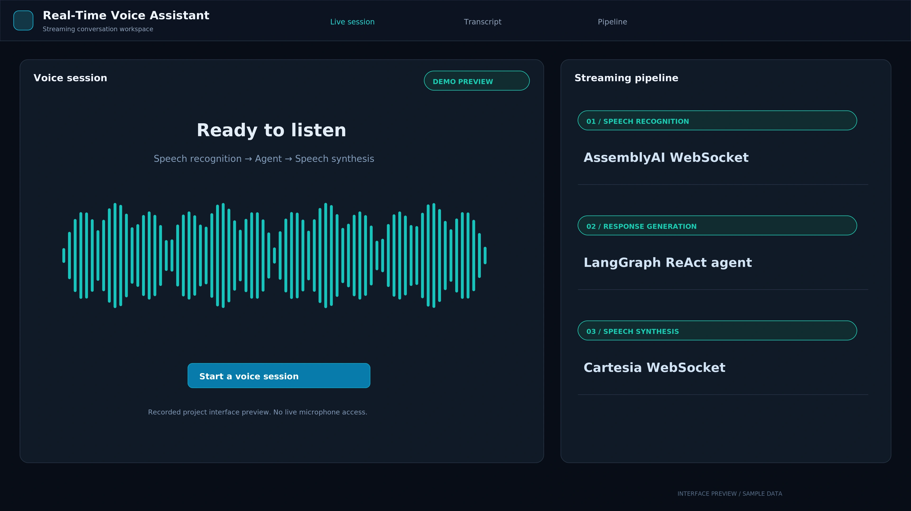

01 / THE PROBLEM
Why build it?
Voice conversations need a continuous path from incoming audio to an intelligible spoken reply.
VOICE AI / ENGINEERING PROJECT
Streaming speech into a natural conversation.

A conversational voice project connecting speech recognition, a ReAct agent, and speech synthesis over WebSockets.
01 / THE PROBLEM
Voice conversations need a continuous path from incoming audio to an intelligible spoken reply.
02 / THE IMPLEMENTATION
The public project showcase describes AssemblyAI streaming transcription, a LangGraph ReAct agent, and Cartesia speech synthesis, connected through FastAPI and WebSockets.
A GOOD PLACE TO START